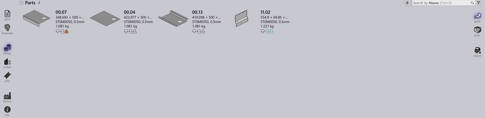

부품
TruSmartCAM 의 Part Library 는 가져온 모든 부품이 대화형 타일로 표시되는 중앙 집중식 작업 공간 역할을 합니다. 사용자는 부품 세부 정보를 빠르게 보고, 머신 전반의 툴링 상태를 확인하고, 검색, 탐색 또는 부품별 정보 열기와 같은 작업을 수행할 수 있습니다.
부품 가져오기에 대한 자세한 내용은 부품 가져오기 를 참조하십시오.
-
바로 가기 P 를 사용하여 library 로 이동합니다.

-
Library 보기에는 가져온 모든 부품이 타일로 표시됩니다.
-
각 타일에는 다음이 표시됩니다:
-
부품 사진.
-
기본 부품 속성 — 이름, 크기, 재료, 두께 등.
-
사용 가능한 팩토리 머신에 대한 툴링 상태.
-
-
보기는 실시간 데이터로 자동으로 새로 고쳐지며, F5 를 눌러 언제든지 강제로 새로 고칠 수 있습니다.
-
Search 상자를 사용하여 Part-Name 또는 Material 로 부품을 검색할 수 있습니다:
-
검색 상자 안을 클릭하거나 Ctrl+F 를 누릅니다.
-
검색할 텍스트를 입력하면 TruSmartCAM 이(가) 목록을 실시간으로 업데이트합니다.
-
Esc 를 눌러 검색 텍스트를 재설정합니다.
-
부품 세부 정보 페이지
-
타일을 두 번 클릭하거나 타일을 선택한 후 Enter 를 누르면 보기가 세부 정보로 변경됩니다.
-
부품을 클릭하여 머신 루트를 봅니다. 루트 내에서 머신을 선택하면 machine panel 이 열리고 툴링을 검토하고 수정할 수 있습니다.
-
또한 오른쪽의 세부 정보 페이지에는 사용된 머신에 대한 툴링 매개변수와 정보가 표시됩니다.